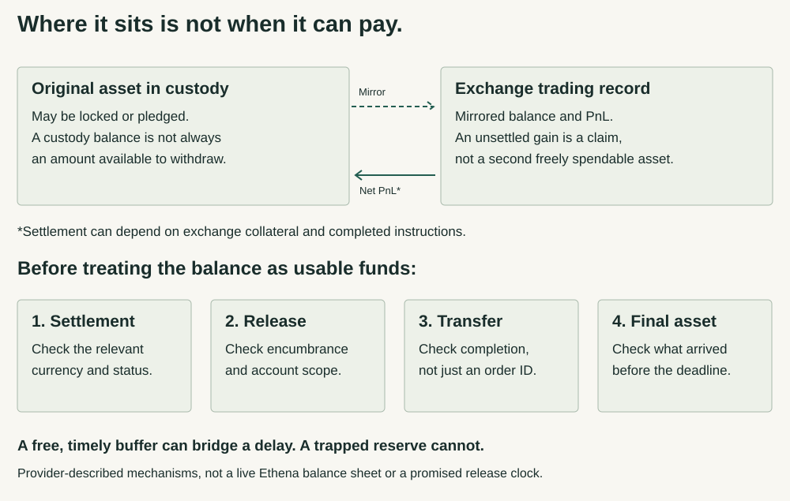

USDe Risk Audit · Research 5 · 13 September 2026
Question revision 2. What risks exist across USDe's mechanisms, smart contracts, protocols, integrations, and counterparties, and how can those risks combine and propagate through the system?
Off exchange does not mean ready to pay.
Keeping backing assets away from an exchange can protect them from some exchange-custody risks. Paying a holder still requires the right asset to be released, transferred and available in time.
Copper's ClearLoop documentation makes the gap concrete: if exchange collateral is insufficient for a settlement, client orders can remain pending until a top-up. Its balance guide also distinguishes total delegated assets from what can be undelegated through the main account. These are documented service conditions—not a finding that an Ethena payment has failed. [1] [2]
What changes for a holder?
| Position | Who or what can delay it? | Practical consequence |
|---|---|---|
| USDe in your wallet | An eligible issuer-redemption route needs inventory and an authorized operator; a sale instead needs a buyer. | Protected backing is not automatic access to issuer redemption or a sale at one dollar. Compare the actual route, not only a custody statement. Direct-exit evidence. |
| sUSDe or queued USDe | Staking rules determine the claim; the later market or issuer exit is separate. | Finishing a cooldown returns USDe. It does not settle an exchange's profit payment or turn backing into your cash. The previous configuration observation is not refreshed here. Staking evidence. |
| An exchange-account balance | The exchange adds its own ledger, withdrawal conditions and operational availability. | Your exchange balance and Ethena's backing custodian are different relationships. A wallet payout or bank credit needs separate confirmation; no particular account was tested. |
| A position with debt | The lender's valuation and liquidation rules continue while another route waits. | A delay may become a costly sale or loss only under the actual position's rules. An unrelated supplier's loss cannot be inferred from the token name alone. Added-risk evidence. |
Follow the balance through the release conditions.

A virtual trading balance lets an exchange recognize collateral without receiving that original asset into an ordinary exchange wallet. Do not add the mirror and the original as two independent backing resources. An exchange's unsettled profit obligation is a different claim and needs its own settlement evidence. [3]
In ClearLoop's published workflow, the exchange calculates profit and loss. The status definitions distinguish fetched instructions, partial completion and pending on-chain orders. Missing client signatures can leave a partial result. That is why a reported settlement cycle or an order identifier alone is too weak an answer to “can the money be used now?” [1]
The balance guide adds a second gate. It bounds an available-to-undelegate amount by delegated value and the exchange main account's available balance; it also warns that totals can lag activity. Subaccount resources must not be assumed instantly releasable through the main-account route. The relevant amount is asset- and account-specific, not every number visible on a dashboard. [2]
What a stronger operational record would show
For one currency and venue: the settlement cycle and deadline, instruction status, any failure or exclusion, main-account availability, linked transfer completion and credited destination. Current Ethena records of those fields were not obtained. Public schema examples are not account observations, and this report requests no wallet connection or credentials.
A daily cycle is not an end-to-end exit promise.
Ethena's public pages and provider descriptions use daily, venue-dependent multi-hour and historical T+1 settlement language. These descriptions cover different services and dates. They cannot be averaged into a protocol-wide waiting period. A cycle's end, a reconciled profit, an unlocked balance and a completed payment are separate milestones. [3] [4]
Legal protection also has a scope. Copper and Deribit's June 2023 announcement describes a trust alongside reciprocal security interests. Ceffu's UAE page expressly places MirrorX outside Ceffu Custody FZE's service and VARA regulatory perimeter. Those facts require checking the actual service and legal counterparty rather than borrowing reassurance from a group brand or licence. They do not establish Ethena's executed agreements or a court-tested recovery outcome. [4] [5]
Lending adds another clock. The public March 2026 Maple/Anchorage discussion identifies different legal counterparties and says the detailed loan agreements are confidential. A recall or borrower payment is not the same as releasing an idle custody balance. This investigation did not establish a current contractual recall deadline or an immediately liquid floor. [6]
A buffer works only where—and when—it can pay.
Consider an invented example, in token units rather than a live balance sheet. At hour zero, an operator has 60 USDC and 20 USDT ready. It must pay 50 USDT at hour two and 80 USDC at hour four. Another 40 USDT arrives at hour eight and 50 USDC at hour twenty-four.
The eventual balances are positive, but the earlier deadlines are short by 30 USDT and 20 USDC. An independent, free buffer of those amounts at the start removes both gaps in this model. Another 50 USDC alone does not automatically cover a USDT obligation: any conversion needs an available route, sufficient proceeds and timely arrival.
A reserve trapped behind the same impaired provider cannot be assumed free merely because its accounting value is large. Multiple custodians connected to one failed exchange do not make that exchange's settlement obligation independent. These are conditional funding tests, not estimates of Ethena's current liquidity or a prediction of failure.
The saved toy model passed twelve consistency checks. It rejects duplicate claim identifiers and does not assume automatic conversion or credit. It uses invented deadlines, ignores many real market costs and is not an EVM, custody-API, solvency or probability test. Example data and scope.
The protective countercase matters. LlamaRisk's February 2025 account of the Bybit event reports successful redemptions using stablecoin buffers and settlement of outstanding profit. That is a reported historical resilience example, not this run's receipt reconciliation or evidence that today's buffer is sufficient. Its older numbers and universal-sounding protection language are not carried forward as present guarantees. [7]
If obligations fall due before usable resources arrive, the operator may need another funded route, smaller activity or time. Where an adequate independent buffer is already available, the delay need not become a missed payout. To infer price pressure or liquidation beyond that requires actual positions, shared dependencies and executable market evidence—not a diagram alone.
Read the assurance scope before relying on the balance.
The current issuer index lists an August 2026 attestation. Its complete report body was not retrieved in this run. The November 2025 publisher disclosure was readable, but its three embedded letter images were not. Neither the index nor those older reported balances is presented as a new verified reserve assessment. [8]
An assurance ledger should identify the reporting time, asset and liability scope, rights or encumbrances checked, procedures, signatory and exclusions. General PCAOB and SEC staff guidance explains why selected reserve work is not interchangeable with a financial-statement audit. These are general scope cautions, not adverse findings about unread Ethena reports. [9]
Legal-document reading limit
Selected June 2026 Ceffu terms and screenshots were inspected. Some requested page renderings did not align with the parsed passages, and complete raw bytes were not obtained. Detailed recovery or deadline clauses from that inconsistent representation are not used to assert an Ethena obligation. A generic document is also not proof that a particular client signed it. Ceffu terms landing page.
Still unverified: the applicable signed custody and loan agreements; present account balances and settlement performance; current controller, redeemer and staking permissions; complete Safe and Silo dependencies; full event history; executable exit prices; and matched current backing and liabilities. The earlier Ethereum observation at block 25,952,841 remains dated 11 September 2026. No current state was substituted for that historical request.
Sources and observation dates
[1] Copper operational settlement. Settlement conditions and API fields; status definitions. Relevant substantive bodies read 13 September 2026. Public documentation, not actual account responses.
[2] Release scope. ClearLoop delegated balances; undelegation workflow. Narrative, limits and linked-order fields read 13 September 2026; not every generic order field or a live withdrawal.
[3] Asset and clock descriptions. ClearLoop introduction; Ethena's off-exchange detail, exchange-failure page and custody overview. Read 13 September 2026; undated provider lists and intervals are not a current position register.
[4] Historical arrangements. Copper/Deribit trust announcement, header 26 June 2023, body dateline 27 June; Binance MirrorX announcement, 28 August 2023; Ceffu/Ethena integration, 13 March 2024. Bodies read 13 September 2026; not present SLAs.
[5] Service perimeter. Ceffu UAE MirrorX page, including disclaimer, read 13 September 2026. Provider-described service boundary, not independent licence or client-jurisdiction verification.
[6] Lending counterparty and liquidity discussion. March 2026 proposal and adviser replies, reread 13 September 2026. Private agreements and actual allocations not supplied.
[7] Resilience countercase. LlamaRisk's 25 February 2025 post-mortem, prose read 13 September 2026. An Ethena risk adviser's historical account, not an independent financial audit or this run's transaction replay.
[8] Assurance access. Issuer index and November 2025 disclosure, read 13 September 2026. Latest listed body and embedded historical letters remain unread.
[9] General assurance limits. PCAOB Investor Advocate staff advisory, 8 March 2023; SEC Chief Accountant statement, 27 July 2023. Substantive bodies and disclaimers read 13 September 2026. Neither is an Ethena-specific finding or a new legal rule.
Curated route and example data · All research · Evidence method